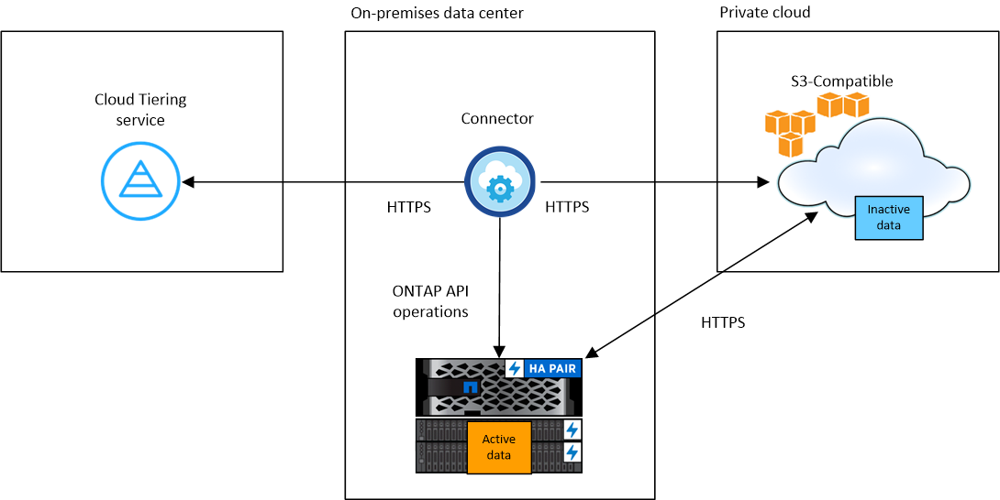

Demander de modifier un document
Demander de modifier un document Modifier sur GitHub
Modifier sur GitHub Guide des contributeurs
Guide des contributeursTiering des données depuis des clusters ONTAP sur site vers un stockage objet S3
Contributeurs
Libérez de l’espace sur vos clusters ONTAP sur site en transférant les données inactives vers n’importe quel service de stockage objet qui utilise le protocole S3 (simple Storage Service).

|
Les clients qui souhaitent utiliser des magasins d’objets qui ne sont pas officiellement pris en charge comme Tier cloud peuvent le faire avec ces instructions. Les clients doivent tester et vérifier que le magasin d’objets répond à leurs exigences. NetApp ne prend pas en charge, ni ne peut être tenu responsable, de tout problème découlant de tout service de magasin d’objets tiers, en particulier s’il n’a pas convenu d’accords de support avec le tiers avec lequel le produit a été créé. NetApp doit être tenu responsable de tout dommage associé ou de toute autre obligation de support pour ce produit tiers. |
Démarrage rapide
Pour commencer rapidement, suivez ces étapes ou faites défiler jusqu’aux sections restantes pour obtenir de plus amples informations.
 Préparez la préparation au Tiering des données vers un stockage objet compatible S3
Préparez la préparation au Tiering des données vers un stockage objet compatible S3Il faut les éléments suivants :
-
Cluster ONTAP source sur site qui exécute ONTAP 9.8 ou version ultérieure et connexion via un port spécifié par l’utilisateur vers le stockage objet compatible S3 de destination. "Découvrez comment détecter un cluster".
-
Le FQDN, la clé d’accès et la clé secrète du serveur de stockage objet de sorte que le cluster ONTAP puisse accéder au compartiment.
-
Un connecteur installé sur votre site.
-
Mise en réseau pour le connecteur qui permet d’établir une connexion HTTPS sortante avec le cluster ONTAP source, vers le stockage objet compatible S3 et vers le service NetApp Cloud Tiering.
 Configurer le Tiering
Configurer le TieringDans BlueXP, sélectionnez un environnement de travail sur site, cliquez sur Activer pour le service Tiering, puis suivez les invites pour le Tiering des données vers un stockage objet compatible S3.
 Configuration des licences
Configuration des licencesPayez pour le Tiering dans le cloud via un abonnement avec paiement basé sur l’utilisation auprès de votre fournisseur cloud, une licence « NetApp Cloud Tiering », ou une combinaison des deux :
-
Pour souscrire à l’offre BlueXP PAYGO à partir du "AWS Marketplace", "Azure Marketplace", ou "Marketplace GCP", Cliquez sur Abonnez-vous et suivez les invites.
-
Pour payer avec une licence Cloud Tiering BYOL, contactez-nous si vous devez en acheter un, puis "Ajoutez-le à votre compte à partir du portefeuille numérique BlueXP".
De formation
Vérifiez la prise en charge de votre cluster ONTAP, configurez votre réseau et préparez votre stockage objet.
L’image suivante montre chaque composant et les connexions que vous devez préparer entre eux :


|
La communication entre le connecteur et le serveur de stockage objet compatible S3 est uniquement destinée à la configuration du stockage objet. |
Préparation des clusters ONTAP
Lors du Tiering des données vers un stockage objet compatible S3, vos clusters ONTAP source doivent répondre aux exigences suivantes.
- Plateformes ONTAP prises en charge
-
Vous pouvez procéder au Tiering des données depuis les systèmes AFF ou FAS avec des agrégats 100 % SSD ou des agrégats 100 % disques durs.
- Version ONTAP prise en charge
-
ONTAP 9.8 ou version ultérieure
- Paramètre d’accès à l’application requis
-
L’utilisateur administrateur du cluster doit disposer d’un accès à l’application « console ». Vous pouvez le vérifier à l’aide de la commande ONTAP
security login show. « Console » doit apparaître dans la colonne application pour l’utilisateur « admin ». Utilisez lesecurity login createcommande permettant d’ajouter l’accès aux applications de console si nécessaire. "Pour plus de détails, reportez-vous aux commandes « Security login »". - Configuration requise pour la mise en réseau des clusters
-
-
Le cluster ONTAP établit une connexion HTTPS via un port spécifié par l’utilisateur pour un stockage objet compatible S3 (le port est configurable lors de la configuration du Tiering).
Le système ONTAP source lit et écrit les données vers et à partir du stockage objet. Le stockage objet ne démarre jamais, il répond simplement.
-
Une connexion entrante est requise à partir du connecteur, qui doit résider dans vos locaux.
Aucune connexion entre le cluster et le service Cloud Tiering n’est requise.
-
Un LIF intercluster est nécessaire sur chaque nœud ONTAP qui héberge les volumes que vous souhaitez mettre en niveau. La LIF doit être associée au IPspace que ONTAP doit utiliser pour se connecter au stockage objet.
Lorsque vous configurez le Tiering des données, Cloud Tiering vous invite à utiliser l’IPspace. Vous devez choisir l’IPspace auquel chaque LIF est associée. Il peut s’agir de l’IPspace par défaut ou d’un IPspace personnalisé que vous avez créé. En savoir plus sur "LIF" et "Les IPspaces".
-
- Volumes et agrégats pris en charge
-
Le nombre total de volumes que vous pouvez effectuer le Tiering dans Cloud Tiering peut être inférieur au nombre de volumes sur votre système ONTAP. En effet, certains volumes ne peuvent pas être hiérarchisés à partir de certains agrégats. Consultez la documentation ONTAP de "Fonctionnalité ou fonctionnalités non prises en charge par FabricPool".

|
NetApp Cloud Tiering prend en charge les volumes FlexVol et FlexGroup. |
Détection d’un cluster ONTAP
Vous devez créer un environnement de travail ONTAP sur site dans BlueXP Canvas avant de commencer le Tiering des données inactives.
Préparation du stockage objet compatible S3
Le stockage objet compatible S3 doit répondre à plusieurs exigences :
- Identifiants S3
-
Lorsque vous configurez le Tiering vers un stockage objet compatible S3, vous êtes invité à créer un compartiment S3 ou à sélectionner un compartiment S3 existant. Vous devez fournir NetApp Cloud Tiering avec une clé d’accès S3 et une clé secrète. NetApp Cloud Tiering utilise les clés pour accéder au compartiment.
Ces clés d’accès doivent être associées à un utilisateur disposant des autorisations suivantes :
"s3:ListAllMyBuckets", "s3:ListBucket", "s3:GetObject", "s3:PutObject", "s3:DeleteObject", "s3:CreateBucket"
Création ou commutation de connecteurs
Un connecteur est nécessaire pour transférer les données vers le cloud. Lorsque vous Tiering des données vers un stockage objet compatible S3, un connecteur doit être disponible sur site. Vous devrez soit installer un nouveau connecteur, soit vérifier que le connecteur actuellement sélectionné réside sur site.
Préparation de la mise en réseau pour le connecteur
Assurez-vous que le connecteur dispose des connexions réseau requises.
-
Assurez-vous que le réseau sur lequel le connecteur est installé active les connexions suivantes :
-
Une connexion Internet sortante vers le service Cloud Tiering via le port 443 (HTTPS)
-
Une connexion HTTPS via le port 443 vers un stockage objet compatible S3
-
Une connexion HTTPS via le port 443 vers votre LIF de gestion de cluster ONTAP
-
Tiering des données inactives de votre premier cluster vers un stockage objet compatible avec S3
Une fois votre environnement prêt, commencez le Tiering des données inactives à partir du premier cluster.
-
Le FQDN du serveur de stockage objet compatible S3 et du port qui sera utilisé pour les communications HTTPS.
-
Une clé d’accès et une clé secrète dotée des autorisations S3 requises.
-
Sélectionnez un cluster sur site.
-
Dans le panneau de droite, cliquez sur Activer pour le service Tiering.

-
Définir le nom de stockage d’objet : saisissez un nom pour ce stockage d’objet. Il doit être unique à partir de tout autre stockage objet que vous pouvez utiliser avec des agrégats sur ce cluster.
-
Sélectionnez fournisseur : sélectionnez compatible S3 et cliquez sur Continuer.
-
Suivez les étapes des pages Créer un stockage objet :
-
Serveur : saisissez le FQDN du serveur de stockage objet compatible S3, le port que ONTAP doit utiliser pour la communication HTTPS avec le serveur, ainsi que la clé d’accès et la clé secrète pour un compte disposant des autorisations S3 requises.
-
Godet : ajoutez un nouveau compartiment ou sélectionnez un compartiment existant et cliquez sur Continuer.
-
Cluster Network : sélectionnez l’IPspace ONTAP à utiliser pour se connecter au stockage objet et cliquez sur Continuer.
Le choix du bon IPspace garantit que Cloud Tiering peut configurer une connexion de ONTAP vers votre stockage objet compatible S3.
-
-
Sur la page Success, cliquez sur Continuer pour configurer vos volumes maintenant.
-
Sur la page Tier volumes, sélectionnez les volumes pour lesquels vous souhaitez configurer le Tiering et cliquez sur Continuer :
-
Pour sélectionner tous les volumes, cochez la case dans la ligne de titre (
 ) Et cliquez sur configurer les volumes.
) Et cliquez sur configurer les volumes. -
Pour sélectionner plusieurs volumes, cochez la case pour chaque volume (
 ) Et cliquez sur configurer les volumes.
) Et cliquez sur configurer les volumes. -
Pour sélectionner un seul volume, cliquez sur la ligne (ou
 icône) du volume.
icône) du volume.
-
-
Dans la boîte de dialogue Tiering Policy, sélectionnez une règle de hiérarchisation, vous pouvez éventuellement ajuster les jours de refroidissement des volumes sélectionnés, puis cliquez sur Apply.

Vous avez configuré le Tiering des données à partir de volumes du cluster vers un stockage objet compatible S3.
Vous pouvez vérifier les informations concernant les données actives et inactives sur le cluster. "En savoir plus sur la gestion de vos paramètres de hiérarchisation".
Vous pouvez également créer un autre stockage objet, lorsque vous souhaitez hiérarchiser les données issues de certains agrégats d’un cluster vers plusieurs magasins d’objets. Ou si vous prévoyez d’utiliser la mise en miroir FabricPool où vos données hiérarchisées sont répliquées vers un magasin d’objets supplémentaire. "En savoir plus sur la gestion des magasins d’objets".